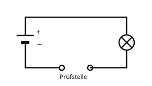

Leiter und Nichtleiter
Mit einem KI-Tutor lernen
Ein KI-Tutor erklärt dir diese Seite und hilft dir bei den Übungen. Wähl deinen Assistenten:
Mit Claude öffnen Mit ChatGPT öffnen Mit Mistral Vibe öffnen
Du nutzt dein eigenes Konto beim Anbieter. Der Assistent ist kein Angebot von lernapps.net: lernapps liefert nur Inhalte und Übungen. Die Wahl gilt für alle Seiten, nur auf diesem Gerät.
Warum Kabel zwei Teile haben
Du weißt jetzt, dass der Strom einen geschlossenen Weg braucht. Ein Kabel ist so ein Weg. Wenn du ein Kabel aufschneidest, siehst du innen einen glänzenden Draht aus Metall und außen eine Hülle aus Kunststoff. Warum ist das so?
Danach kannst du Leiter und Nichtleiter unterscheiden und Beispiele nennen.
Wie du prüfst, ob ein Stoff den Strom leitet
Du baust einen Stromkreis mit einer Lücke, der Prüfstelle. In der Zeichnung sind die beiden Enden der Lücke als kleine Kreise gezeichnet. Du legst einen Gegenstand so hin, dass er beide Enden berührt. Leuchtet die Lampe, ist der Weg wieder geschlossen: Der Gegenstand lässt den Strom durch. Bleibt sie dunkel, ist der Weg weiter unterbrochen.

Die Prüfstelle im unteren Kabel ist die Lücke, in die du den Gegenstand legst.
Quelle: eigene Zeichnung. Lizenz: CC-BY-4.0.Mit dieser Prüfung findet man Ergebnisse wie in der Tabelle. Lies sie als Ergebnisliste von Versuchen.
| Gegenstand | Lampe leuchtet | Der Stoff ist ein |
|---|---|---|
| Kupferdraht | ja | Leiter |
| Eisennagel | ja | Leiter |
| Bleistiftmine (Graphit) | ja | Leiter |
| Salzwasser | ja | Leiter |
| Gummiband | nein | Nichtleiter |
| Glasstab | nein | Nichtleiter |
| Kunststofflineal | nein | Nichtleiter |
| Trockenes Holzstück | nein | Nichtleiter |
- Leiter
Ein Leiter ist ein Stoff, durch den der elektrische Strom fließen kann.
- Nichtleiter (Isolator)
Ein Nichtleiter oder Isolator ist ein Stoff, der den elektrischen Strom nicht durchlässt.
Nicht nur Metalle leiten
Viele denken: „Metall leitet, alles andere nicht.“ Die Tabelle zeigt es anders: Auch die Bleistiftmine und das Salzwasser leiten den Strom. Merke dir die Stoffe aus der Tabelle, nicht nur eine Regel.
Beispiel: Das Stromkabel
Warum der Draht aus Kupfer ist und die Hülle aus Kunststoff
- Der Strom soll durch das Kabel zur Lampe fließen. Dafür braucht er einen Stoff, der leitet. Kupfer ist ein Leiter, darum ist der Draht aus Kupfer.
- Der Draht soll nirgends ungewollt einen anderen Weg finden, zum Beispiel über deine Hand. Dafür braucht er eine Hülle aus einem Nichtleiter. Kunststoff ist ein Nichtleiter.
- Das Kabel hat also beides: innen den Leiter für den Weg des Stroms, außen den Nichtleiter, der den Strom im Draht hält.
Übung
Übung
Lösung
ein Kupferdraht richtige Antwort
Kupfer ist ein Leiter. Darum sind die Drähte in Kabeln aus Kupfer.
ein Radiergummi
Gummi ist ein Nichtleiter. Die Lampe würde dunkel bleiben.
eine Bleistiftmine richtige Antwort
Die Mine besteht aus Graphit. Graphit ist kein Metall, leitet aber den Strom.
ein Glasstab
Glas ist ein Nichtleiter. Es lässt den Strom nicht durch.
Kupferdraht und Bleistiftmine leiten, Radiergummi und Glasstab nicht.
Mehr dazu:
Übung
Lösung
Richtige Antwort: Die Aussage stimmt nicht.
Die Bleistiftmine (Graphit) und das Salzwasser sind keine Metalle und leiten den Strom trotzdem.
Mehr dazu:
Übung
Lösung
Der Gegenstand ist ein Nichtleiter. richtige Antwort
Der Gegenstand lässt den Strom nicht durch, der Weg bleibt unterbrochen. So erkennt man Nichtleiter.
Der Gegenstand ist ein Leiter, aber die Batterie ist leer.
Ein Leiter würde die Lücke schließen. Wäre die Batterie leer, könntest du das mit einem Kupferdraht an der Prüfstelle prüfen.
Der Gegenstand ist ein Leiter, er braucht nur länger.
Der Strom wartet nicht. Ein Leiter schließt den Weg sofort.
Bleibt die Lampe bei fest anliegendem Gegenstand dunkel, ist der Weg nicht geschlossen. Der Gegenstand ist ein Nichtleiter.
Mehr dazu:
Übung
Lösung
Kunststoff ist ein Nichtleiter und hält den Strom im Draht. richtige Antwort
Die Hülle lässt den Strom nicht durch. Er bleibt im Draht und nimmt keinen ungewollten Weg.
Kunststoff ist ein Leiter und hilft dem Draht beim Leiten.
Kunststoff leitet den Strom nicht. Das zeigt die Tabelle mit dem Lineal.
Kunststoff macht das Kabel nur bunter.
Die Farbe hilft beim Unterscheiden der Kabel, aber der Kunststoff hat eine wichtigere Aufgabe: Er isoliert.
Der Draht im Kabel leitet, die Hülle isoliert. So bleibt der Strom auf seinem Weg.
Mehr dazu: